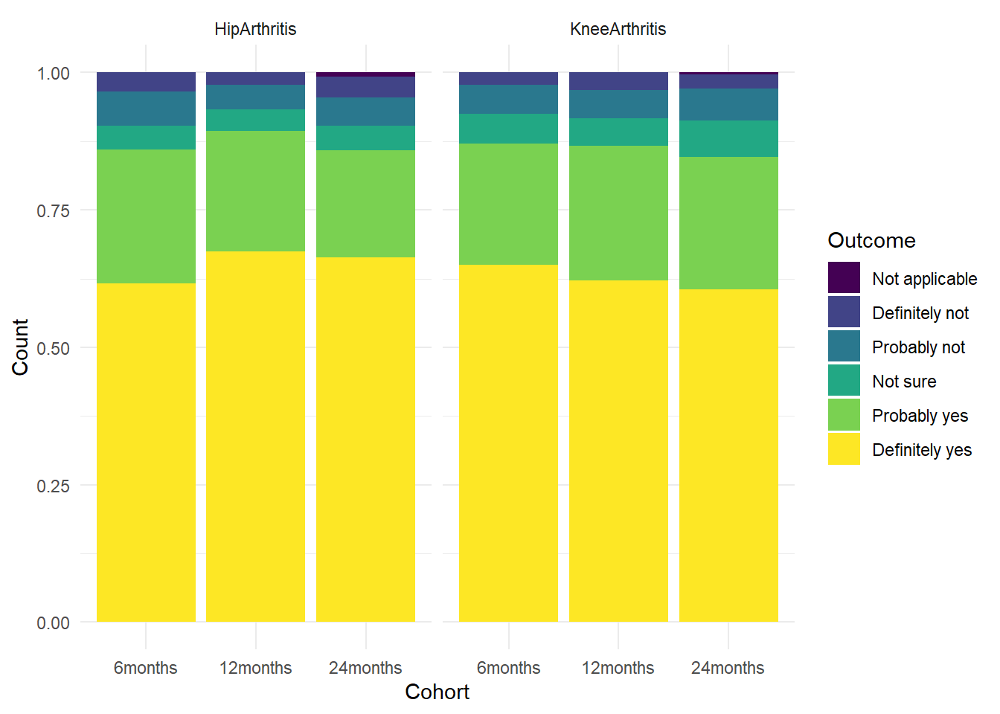

AORA Review
1 Preamble
The following analysis is a report on the activity, quality and data contained in the AORA registry.
Access to the AORA datasets was pre-authorised.
A function was generated to retrieve files to call on later in the analysis for processing data imports.
Data was retrieved from live database tables. Source files were specified and stored as global variables to call on in further functions.
A static registry snapshot was retrieved and formatted based on the fixed date of preparation of the snapshot (17-Jun-2025).
2 Context
The Arthroplasty Outcomes in Regional Australia (AORA) registry has been in operation since June 2020, collecting KneeArthritis and HipArthritis presentations to a private clinic in Grafton, NSW. The setup of the registry is detailed on the registry wiki. The registry started with two surgeons contributing with one surgeon stopping participation in December 2022.
The registry has HREC approval until 21-Oct-2025 and the HREC has recommended that;
…this provides the opportunity for the research team to review the HREC approved protocol and related study material given the amount of time elapsed since first approved in October, 2020. Before the next progress report is due (21/10/2025) please submit a ethics amendment with tracked changes and a request for an extension to HREC approval (if required).
3 Recruitment Flow by Region
Flowcharts as per STROBE (Vandenbroucke et al. 2007) and RECORD (Benchimol et al. 2015) guidelines were generated for treatments enrolled into the Registry. Followup was set to eligibility at 12months followup.
Cumulative recruitment over time was plotted from Registry inception to the present.
The trend in Figure 2 shows a reduction in recruitment rates to the registry as inclusion criteria have been refined and improved specificity in bringing cases into the registry has been achieved.
4 Missingness and Engagement
Calculations have been made regarding the capture rate for PROMs at set timepoints and for intraoperative data with regard to surgical cases.
4.1 Baseline and Intraoperative
Patients are enrolled to a registry cohort and sent relevant questionnaires for their presentation around their initial consultation, or prior to surgery to establish a baseline. The referral pathways for surgery have been fluid over time and the participation of other surgeons to intraoperative data collection has been absent, therefore the missingness was calculated only for surgical cases treated by the participating surgeon.
Missingness for baseline PROMs (represented by VR12) and intraoperative data is captured in Figure 3. Overall, the patient response rate at baseline is ~65%. Intraoperative data missingness may be have multiple causal pathways - some may have been missed by the operating surgeon, or that there is a proportion of non-arthroplasty surgical cases included in the cohort dataset.
4.2 Patient-reported Outcomes by TimePoint
Patients are sent sms around their surgical anniversay at the times illustrated in the figures below.
The cumulative results in Figure 4 and Figure 5 illustrate the difficulty in engaging patients beyond short term followup.
4.3 Baseline by Year
Patient responses to baseline scores were assessed over time. The VR12 is a general health questionnaire that is presented to all patients enrolled in the registry, regardless of cohort.

The missingness rates for Figure 6 and Figure 7 show declining engagement rates over the last two years of operation
5 Cohort Analysis
The VR12 component scores were compared between cohorts at baseline.

Between-cohort variability is observed for the Physical Component Score of the VR12 (Figure 8), but not as pronounced for the Mental Component Score (Figure 9). Most notable is the high variation within all cohorts for both component scores.

5.1 Knee Arthritis
The demographics for surgical cases in the Knee Arthritis cohort are presented.
| Characteristic | Non-Surgical N = 6151 |
Surgery recommended N = 3271 |
Surgical N = 8361 |
|---|---|---|---|
| TreatmentType | |||
| Primary | 614 (100%) | 327 (100%) | 836 (100%) |
| TreatmentStatus | |||
| Failed | 109 (18%) | 40 (12%) | 6 (0.7%) |
| No further followup | 67 (11%) | 95 (29%) | 48 (5.7%) |
| Ongoing | 438 (71%) | 192 (59%) | 779 (93%) |
| Pending: Treatment | 0 (0%) | 0 (0%) | 3 (0.4%) |
| DateInitialExamination | 2020-02-07 - 2025-03-31 | 2019-06-18 - 2025-05-16 | 2019-01-21 - 2025-05-10 |
| AgeAtInitialExam | 68 (61, 73) | 67 (61, 74) | 68 (61, 74) |
| Sex | |||
| Female | 311 (51%) | 158 (48%) | 435 (52%) |
| Male | 304 (49%) | 169 (52%) | 401 (48%) |
| 1 n (%); Min - Max; Median (Q1, Q3) | |||
| Characteristic | N = 6221 |
|---|---|
| TourniquetApplied | |
| No | 2 (0.6%) |
| Yes - less than 10min | 307 (94%) |
| Yes - more than 10min | 16 (4.9%) |
| ComponentStrategy | |
| Kinematic | 321 (100%) |
| TibiaBrand2 | |
| Medacta GMK Sphere | 221 (68%) |
| Stryker Triathlon | 100 (31%) |
| Zimmer Persona | 4 (1.2%) |
| TibiaFixation | |
| Cemented | 318 (98%) |
| Cementless | 7 (2.2%) |
| BearingType2 | |
| Condylar-stabilised | 26 (8.2%) |
| Cruciate retaining | 74 (23%) |
| Medial pivot | 218 (69%) |
| PatellarResurfacing | 323 (99%) |
| 1 n (%) | |
| Characteristic | N = 6221 |
|---|---|
| SpinalAnaesth | 292 (90%) |
| Unknown | 297 |
| Spinalprimary_agent | |
| 20 | 1 (0.4%) |
| marcain | 283 (100%) |
| Unknown | 338 |
| Spinalprimary_dose | 1.50 (1.50, 1.60) |
| Unknown | 347 |
| Spinalsecondary_agent | |
| fentanyl | 219 (99%) |
| marcain | 1 (0.5%) |
| morphine | 1 (0.5%) |
| Unknown | 401 |
| Spinalsecondary_dose | |
| 15 | 6 (3.0%) |
| 20 | 191 (96%) |
| 100 | 1 (0.5%) |
| Unknown | 424 |
| 1 n (%); Median (Q1, Q3) | |
Assessment of the Knee Arthritis cohort reveals that some patients enrolled in the cohort are scoring high on the KOOS JR preoperatively, intraoperative data requires backfilling and that there may be sufficient variation in surgical technique to warrant further investigation (e.g. patellar resurfacing, tourniquet use, soft tissue management).
| Characteristic | 1 Weeks | 26 Weeks | 52 Weeks | 104 Weeks |
|---|---|---|---|---|
| Procedure Survival | ||||
| Non-Surgical | 100% (100% - 100%) | 91% (89% - 94%) | 87% (84% - 90%) | 83% (79% - 86%) |
| Surgery recommended | 100% (100% - 100%) | 96% (93% - 98%) | 89% (85% - 92%) | 86% (82% - 90%) |
| Surgical | 100% (100% - 100%) | 100% (100% - 100%) | 100% (99% - 100%) | 99% (99% - 100%) |
5.2 Hip Arthritis
| Characteristic | Non-Surgical N = 1891 |
Surgery recommended N = 1031 |
Surgical N = 4131 |
|---|---|---|---|
| TreatmentType | |||
| Primary | 188 (99%) | 103 (100%) | 413 (100%) |
| Revision Else | 1 (0.5%) | 0 (0%) | 0 (0%) |
| TreatmentStatus | |||
| Failed | 45 (24%) | 11 (11%) | 5 (1.2%) |
| No further followup | 21 (11%) | 38 (37%) | 23 (5.6%) |
| Ongoing | 121 (65%) | 54 (52%) | 383 (93%) |
| Pending: Treatment | 0 (0%) | 0 (0%) | 2 (0.5%) |
| DateInitialExamination | 2020-06-19 - 2025-03-24 | 2019-03-29 - 2025-03-03 | 2019-03-29 - 2025-05-07 |
| AgeAtInitialExam | 66 (59, 74) | 66 (60, 72) | 69 (62, 75) |
| Sex | |||
| Female | 103 (54%) | 42 (41%) | 200 (48%) |
| Male | 86 (46%) | 61 (59%) | 213 (52%) |
| 1 n (%); Min - Max; Median (Q1, Q3) | |||
| Characteristic | N = 2861 |
|---|---|
| Approach | |
| Anterior | 168 (100%) |
| SoftTissueRelease | |
| Anterior | 158 (94%) |
| None | 1 (0.6%) |
| Yes | 9 (5.4%) |
| ComponentAlignment | |
| Navigated - OrthoMap | 99 (62%) |
| Navigated - Other | 60 (38%) |
| FemurBrand2 | |
| Exacta | 1 (0.6%) |
| Medacta | 59 (35%) |
| Stryker | 108 (64%) |
| FemurFixation | |
| Cemented | 107 (64%) |
| Cementless | 61 (36%) |
| CupBrand2 | |
| Medacta | 60 (36%) |
| Stryker | 108 (64%) |
| CupFixation | |
| Cemented | 2 (1.2%) |
| Cementless | 166 (99%) |
| 1 n (%) | |

| Characteristic | 1 Weeks | 26 Weeks | 52 Weeks | 104 Weeks |
|---|---|---|---|---|
| Procedure Survival | ||||
| Non-Surgical | 100% (100% - 100%) | 90% (85% - 94%) | 83% (77% - 89%) | 76% (70% - 83%) |
| Surgery recommended | 99% (97% - 100%) | 92% (86% - 97%) | 89% (83% - 96%) | 87% (81% - 95%) |
| Surgical | 100% (99% - 100%) | 99% (98% - 100%) | 99% (98% - 100%) | 99% (98% - 100%) |
6 Monitoring Module
6.1 Context
6.2 Flow
6.3 Response Patterns

6.3.1 Alerts
7 Interpretation
8 Recommendations
Benchimol, Eric I., Liam Smeeth, Astrid Guttmann, Katie Harron, David Moher, Irene Petersen, Henrik T. Sørensen, Erik von Elm, and Sinéad M. Langan. 2015. “The REporting of Studies Conducted Using Observational Routinely-Collected Health Data (RECORD) Statement.†PLOS Medicine 12 (10): e1001885. https://doi.org/10.1371/journal.pmed.1001885.
Vandenbroucke, Jan P, Erik von Elm, Douglas G Altman, Peter C Gøtzsche, Cynthia D Mulrow, Stuart J Pocock, Charles Poole, James J Schlesselman, and Matthias Egger. 2007. “Strengthening the Reporting of Observational Studies in Epidemiology (STROBE): Explanation and Elaboration.†PLoS Medicine 4 (10): e297. https://doi.org/10.1371/journal.pmed.0040297.